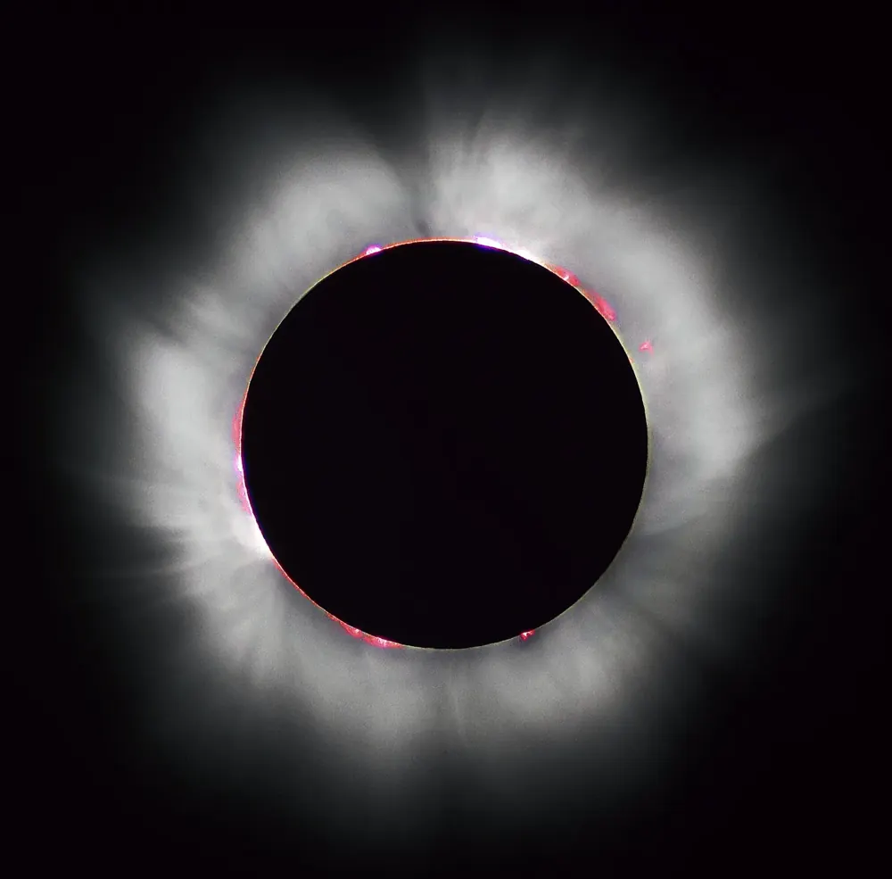
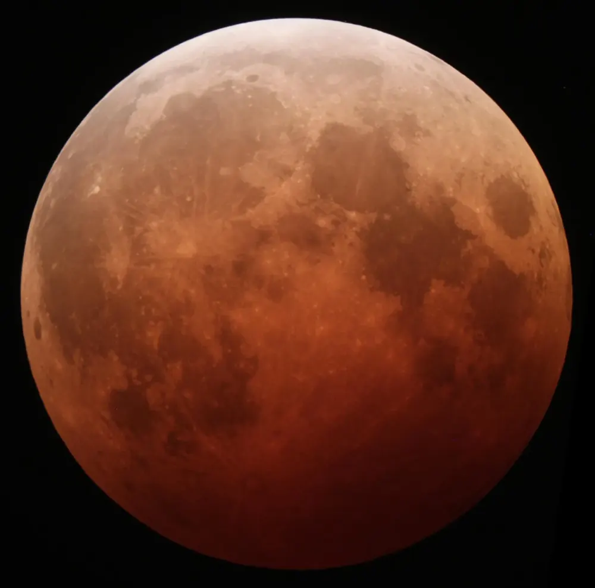

🌑 Solar and lunar eclipses
What happens when the Sun, the Earth and the Moon line up.

📷 Luc Viatour · CC BY-SA 3.0

📷 Alfredo Garcia, Jr · CC BY-SA 2.0
Solar eclipse
When the Moon comes exactly between the Sun and the Earth, its shadow falls on the Earth and blocks the Sun. This can only happen on a new Moon day. If the Moon covers the Sun completely it is a total eclipse; if a ring of Sun is left it is an annular eclipse.
Lunar eclipse
When the Earth comes exactly between the Sun and the Moon, Earth’s shadow falls on the Moon. This can only happen on a full Moon night. In a total lunar eclipse the Moon turns red, because a little sunlight bends through Earth’s air and reaches it.
Why not every month?
The Moon’s path is tilted by about 5° to the Earth’s path around the Sun. So most months the Moon passes a little above or below the line. Eclipses happen only when a new or full Moon falls near the points where the two paths cross. That lines up about twice a year, so each year has two to five solar eclipses and up to three lunar eclipses somewhere on Earth.
Watch safely
Never look at the Sun directly, even during an eclipse: it can damage your eyes for ever. Use certified eclipse glasses or a pinhole projector. A lunar eclipse is completely safe to look at.
- Solar eclipse: Moon in the middle, on amavasya. Lunar eclipse: Earth in the middle, on purnima.
- Never look at the Sun without proper eclipse glasses.